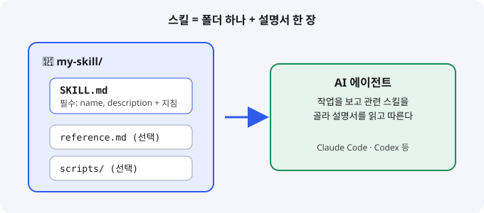
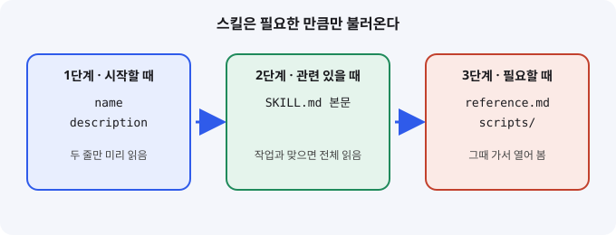

Agent Skills: AI 에이전트에게 업무 매뉴얼 한 장을 쥐여 주는 방식
- Agent Skills는 이름(name)과 설명(description), 지침을 담은 SKILL.md 파일을 폴더에 넣어 AI 에이전트에게 전문 업무 매뉴얼을 건네는 방식이다.
- 에이전트는 시작할 때 설명 두 줄만 읽고, 작업과 관련 있을 때만 본문을 펼쳐 보므로 스킬을 많이 달아도 문맥을 아낀다.
- 입문 개발자라면 매번 붙여넣던 요청 하나를 SKILL.md 한 장으로 적어 두는 것부터 시작하면 된다.
10월 23일부터 27일 사이 GitHub에 Agent Skills 형식의 저장소가 연달아 올라왔습니다. 디자인, Rust 코딩, 족보 연구처럼 주제는 제각각인데 모두 SKILL.md 파일 하나로 에이전트의 행동을 바꾸는 구조입니다. 입문자에게는 "자주 쓰는 프롬프트를 파일로 저장해 재사용하는 방법"이라고 생각하면 가장 쉽습니다.
01한눈에 보기
요리사에게 건네는 레시피 카드를 떠올려 보세요. 요리사는 이미 요리를 할 줄 알지만, 우리 집만의 특별 메뉴는 카드를 보고 만듭니다. Agent Skills에서 AI 에이전트가 요리사이고, SKILL.md가 레시피 카드입니다. 카드는 폴더 하나에 들어 있고, 맨 위에는 카드 제목(name)과 한 줄 설명(description)을 적습니다. 설명이 있어야 에이전트가 "이 카드는 지금 작업에 쓸 만하다"고 판단할 수 있습니다.

프런트매터(frontmatter): 파일 맨 위에 --- 사이로 적는 메타 정보 블록입니다.
에이전트: 사람 대신 여러 단계를 계획하고 도구를 써서 일을 끝내는 AI 프로그램입니다.
02어떻게 동작하나요
흐름은 입력, 처리, 출력 순서입니다. 입력은 사용자의 요청입니다. 처리 단계에서 에이전트는 설치된 스킬의 목록을 보고 맞는 스킬을 고른 뒤 SKILL.md 본문을 읽습니다. 필요하면 같은 폴더의 참고 파일이나 스크립트를 추가로 엽니다. 출력은 그 지침을 따라 만든 결과물입니다.
Anthropic이 2025년 10월 공개한 엔지니어링 글에 따르면, 이 과정은 세 단계로 나뉩니다. 시작할 때는 각 스킬의 name과 description만 에이전트의 시스템 프롬프트에 올라갑니다. 관련이 있다고 판단하면 SKILL.md 전체를 읽고, 참고 파일과 스크립트는 정말 필요할 때만 엽니다. 이를 점진적 공개(progressive disclosure)라고 부릅니다. 책의 목차만 먼저 훑고 필요한 장만 펼쳐 보는 것과 같습니다.

03왜 지금 화제인가요
10월 23일 전후로 디자인과 코딩용 스킬이 한꺼번에 공개됐습니다. 개인 개발자가 만든 저장소가 며칠 만에 수백에서 수천 스타를 받았고, 여러 GitHub 일일 집계 페이지가 이를 연달아 소개했습니다.
스타 수는 집계 사이트마다 시점과 기준이 달라 정확히 비교하기 어렵습니다. 그래서 여기서는 "많은 개발자가 관심을 보였다"는 신호로만 읽습니다.
04관련 나라·기업
| 구분 | 이름 | 어떤 관련이 있나 |
|---|---|---|
| 기업 | Anthropic | Claude Code의 제작사로, 2025년 10월 Agent Skills를 공식 엔지니어링 글로 소개했습니다. |
| 기업 | NVIDIA | 스킬 보안 검사 도구 SkillSpector를 공개한 것으로 집계에 나옵니다. |
| 나라 | 미국 | 두 기업 모두 미국에 본사를 둔 회사입니다. |
05기존 방식과 무엇이 다른가
| 비교 항목 | 기존 방식 | Agent Skills |
|---|---|---|
| 재사용 | 채팅창에 긴 지시를 매번 복사해 붙여넣기 | 폴더에 저장해 두고 에이전트가 필요할 때 찾아 쓰기 |
| 문맥 사용 | 지시가 길면 매번 전부 차지 | 설명 두 줄만 먼저 읽고, 필요할 때 본문을 읽기 |
| 공유 | 메모장과 채팅 기록에 흩어짐 | 폴더째로 저장소에 올려 팀이 함께 쓰기 |
| 추가 자료 | 긴 자료를 붙여넣기에 한계가 있음 | 참고 파일과 스크립트를 같은 폴더에 두기 |
06직접 해 보기
공식 설명 기준으로 스킬의 뼈대는 아래와 같습니다. 확인된 필수 항목은 name과 description 두 가지입니다. 아래 내용은 형식을 보여 주는 예시이며, 맨 위 두 줄 사이에 적는 내용이 프런트매터입니다.
첫 걸음은 이렇게 하면 됩니다. 먼저 매번 반복하는 요청 하나를 고릅니다. 다음으로 폴더를 하나 만들고 그 안에 SKILL.md를 만듭니다. 파일 맨 위에 name과 description을 적고, 본문에는 지켜야 할 규칙을 씁니다. 마지막으로 에이전트에게 그 작업을 시키면서, 스킬을 실제로 골라 쓰는지 살펴봅니다.
---
name: commit-message
description: 커밋 메시지를 팀 규칙(제목 50자 이내, 명령형)에 맞게 작성할 때 사용
---
규칙을 여기에 적는다.07주의할 점과 한계
- description이 모호하면 에이전트가 스킬을 고르지 못합니다. "언제 이 스킬을 쓰는지"를 구체적인 말로 적어야 합니다.
- 커뮤니티 스킬에는 지침과 스크립트가 들어 있습니다. 설치 전에 내용을 읽어야 하며, 보안 검사 도구가 나왔다는 사실 자체가 스킬에도 위험이 있다는 뜻입니다.
- 디자인 스킬이 "AI 슬롭을 줄인다"는 효과는 저장소 제작자의 주장입니다. 독립적으로 검증한 자료는 찾지 못했습니다.
- 스타 수와 하루 증가량은 집계마다 기준이 달라 유행의 방향만 보여 줍니다.
- 스킬을 지원하는 도구마다 세부 동작이 다를 수 있으니, 쓰는 도구의 공식 문서를 함께 확인해야 합니다.
08정리
Agent Skills의 핵심은 AI 모델을 새로 만드는 것이 아니라, 내 업무 방식을 파일로 적어 에이전트에게 건네는 것입니다. 10월 말 쏟아진 디자인과 코딩 스킬들은 같은 구조를 서로 다른 주제에 적용한 사례입니다.
입문 개발자라면 오늘 할 일은 하나면 충분합니다. 자주 반복하는 요청 하나를 SKILL.md로 적어 보고, description 한 줄을 여러 번 고쳐 가며 에이전트가 언제 그 스킬을 고르는지 관찰해 보세요.
09참고한 글
- Equipping agents for the real world with Agent Skills Anthropic 엔지니어링 · 2025.10.16 (공식)
- [Daily Digest] AI Trending - 2026-10-26 GitHub Issues · 2026.10.26 23:57 KST
- AI 오픈소스 트렌드 일일 집계 2026-10-27 (rollysys/agents-radar #1558) GitHub Issues · 2026.10.27 13:11 KST
- AI Open Source Trends 2026-10-27 (kouweizhu/agents-radar #672) GitHub Issues · 2026.10.27 10:35 KST
- Agent Tools Today (26 Oct 2026) Munder Difflin Blog · 2026.10.26 09:00 KST (수집 구간 밖)